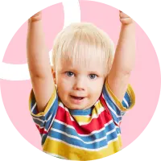
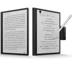
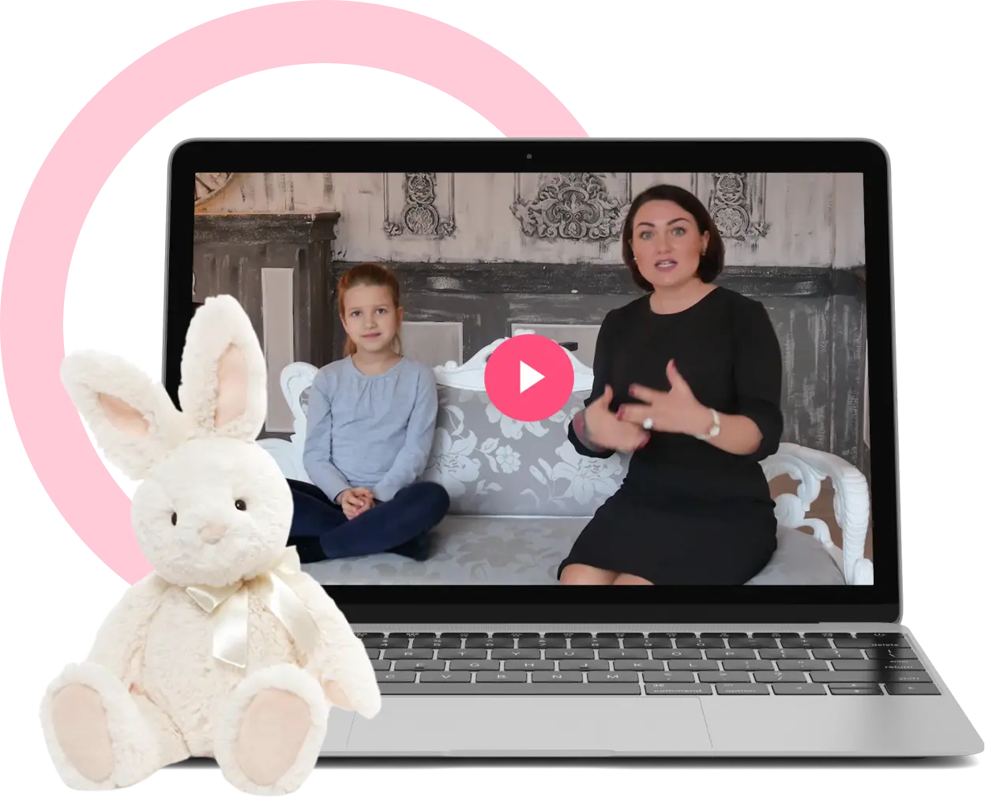
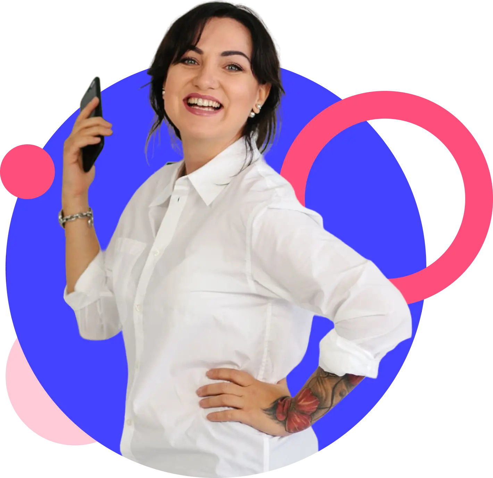
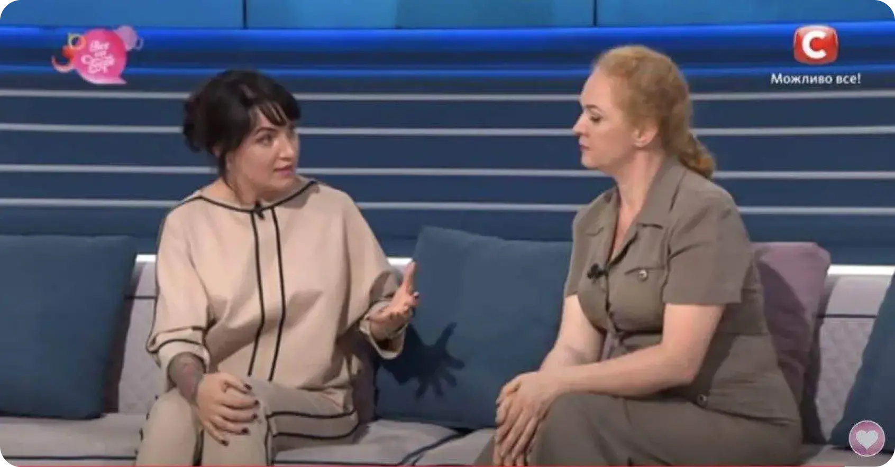

- 10 відео-уроків
- Презентації уроків
- Аудіо-версія уроків
- Доступ до курсу 1 місяць
Кому обов'язково потрібно пройти цей онлайн-курс?
Програма розрахована на мам, які мають дітей:
3-5 років
(раннє дитинство)
Такі діти тільки починають самостійно керувати своєю поведінкою. Якщо батьки будуть розповідати, як добре чинити, а як - погано, то через рік малюк буде здатен самостійно відрізняти хороші вчинки від поганих.
Однак особливість цього періоду в тому, що діти навмисне суперечать батькам, тому що у них починає формуватися почуття незалежності.

5-7 років
(дошкільний вік)
Ці діти вже добре грають за правилами, тобто вміють дотримуються їх. Вони здатні оцінювати свої дії та уявляти їхні наслідки. У них сформований навик між «хочу» і «потрібно» обирати друге, якщо перше суперечить встановленим у сім'ї чи суспільстві нормам. Але наближається підлітковий вік, тому дитина може намагатися бунтувати, зокрема якщо це стосується заборон.
8-10 років
(молодший шкільний вік)
Це складний вік, коли майже всі діти активно перевіряють на міцність межі дозволеного.
Будь-які зауваження та покарання вони сприймають як власне приниження. Навіть якщо вони повністю усвідомлюють свою провину.
Якщо не карати дитину, вона буде думати, що їй все дозволено, може наражати себе на неприємності та небезпеку.
Тому покарання дітей - це один із елементів виховання. Воно має бути у тому чи іншому обсязі в житті дитини обов'язково. Однак у більшості випадків поширені методи покарання не ефективні! Вони викликають протилежний ефект.
Фізичне покарання (биття, стукання, шльопання, щипання тощо)
Цей метод вважається одним із найшкідливіших для дитини. Фізичне насильство може призвести до травм, шоку та відчуття страху.
Це викликає у дітей агресивну поведінку, почуття невдоволення та неповноцінності, а також сприяє розвитку депресії.
Ігнорування
Суть методу полягає в тому, що батьки ігнорують поведінку дитини, яка їм не подобається.
Це призводить до того, що дитина відчуває дистанцію і відсутність любові та підтримки батьків, викликає у дитини страх та почуття самотності.
Позбавлення задоволення
Батьки забирають у дитини щось, що їй подобається, чи не дозволяють робити те, що їй подобається, як покарання за неправильну поведінку. Наприклад, якщо дитина недбало ставиться до іграшок, батьки можуть забрати їх.
Це викликає у дитини почуття образи та невдоволення, а також розвиває комплекс неповноцінності.
Погрози
Батьки намагаються змусити дитину змінити свою поведінку, лякаючи її.
Це викликає у дитини почуття страху та безпорадності. Результатом стане недовіра батькам, а також розвиток депресії та тривоги.
Покарання поширеними методами призводить до:
Дитячої агресії
Затримки фізичного розвитку
Погіршення якості стосунків між дитиною та батьками
Психічних, психоневрологічних, серцево-судинних захворювань
Антисоціальної та злочинної поведінки дітей
Відхилень у розвитку мовлення
Проблем з адаптацією та соціалізацією в суспільстві
Підвищення ризику стати жертвою фізичного насильства
Формування залежностей і розладів харчової поведінки
Бажання ображати власну дитину, дружину чи інших людей в майбутньому
Як неправильне покарання в дитинстві погіршує успішність людини?
Вчені довели, що мозок людей, яких неправильно карали у дитинстві, у дорослому віці виробляє значно менше сірої речовини, що відповідає за обробку інформації. Вона допомагає приймати рішення та розмірковувати. Чим більше сірої речовини є в мозку, тим краще людина може оцінювати наслідки та переваги.
Права медіальна лобова звивина - менше на 19,1%
- Здатність відрізняти себе від інших об'єктів.
- Здатність розпізнавати власні якості, переваги та недоліки.
- Здатність розуміти думку іншої людини (у тому числі вміння вирішувати конфлікти).
- Здатність оцінювати та передбачати поведінку інших.
Ліва медіальна лобова звивина - менше на 14,5%
- Здатність приділяти увагу та концентруватися на чомусь.
- Здатність сприймати інформацію та запам'ятовувати її.
- Здатність вирішення творчих завдань. Такі діти бояться помилитися, а значить, пробувати нове та розвивати свої вміння.
Права фронтальна частина поясної звивини - менше на 16,9%
- Здатність відрізняти себе від інших об'єктів.
- Здатність розпізнавати власні якості, переваги та недоліки.
- Здатність розуміти думку іншої людини (у тому числі вміння вирішувати конфлікти).
- Здатність оцінювати та передбачати поведінку інших.
Як впливають жорсткі покарання у віці 3-10 років на психічний стан?
Це значно спотворює сприйняття реальності. Діти, які часто піддаються фізичному та емоційному насильству, йдуть у світ своїх фантазій. У них з'являються такі розлади, як:
1
Позиція жертви
Засвоєння певної «норми» - сильний має право підкорити слабкого. Дитина починає думати, що з нею так можна поводитися, що вона заслуговує на це. Такі діти звикають не чинити опір і не говорити «ні», тому що просто фізично не можуть протистояти. У дорослому житті їм буде дуже важко відстоювати свою думку, захищати себе чи протистояти несправедливості.
2
Низька самооцінка, відсутність любові до себе
Коли дитину б'ють чи сильно лають, окрім болю, вона відчуває переляк, розчарування, приниження. Якщо це робить той, хто має його захищати, вона перестає цінувати і поважати себе. У неї формується низька самооцінка. Такі діти часто закриваються у собі, у них пригнічується розвиток творчих здібностей, ініціативності та лідерських якостей.
3
Викривлення уявлень про межі тіла
Будь-яка фізична дія - разовий ляпас чи тривале побиття ременем - грубе порушення особистісних кордонів людини. Це перешкоджає формуванню вміння захищати та відстоювати власні межі в дорослому віці. Їй буде дуже складно розпізнавати та поважати кордони інших людей. При порушенні тілесних меж дитини вона починає сприймати фізичне насильство як норму в її майбутніх стосунках з іншими людьми.
4
Невпевненість у собі
Дитина, яка систематично відчуває приниження, не може бути впевненою в собі. У неї формується у уявлення про себе, як про людину, яка має бути зручною, повинна боятися зробити щось не так. Ймовірність того, що така людина вважатиме, що гідна у житті хорошої посади, чогось кращого, мінімальна. Якщо навіть вона досягає певних висот, то лише максимально вичавлюючи із себе останні соки.
5
Психологічна травма
Насильницьке покарання спотворює сприйняття дитиною зовнішньої та внутрішньої реальності, травмує особистість. Дитина стає наляканою, сіпається, гризе нігті, розчісує шкіру, раптом починається енурез, далі він (вона) замикається в собі. Мріє вирости та втекти, помститися. У дорослому віці вона більше схильні до депресій, скоєння суїциду, алкоголізму та вживання наркотиків.
6
Поява комплексів
У дитини починають розвиватися комплекси: провини, неповноцінності, заздрості до інших дітей, у яких добрі батьки, комплекс нелюбимої та небажаної дитини. Далі - тривожний синдром, стрес, невроз.
7
Втрата батьківського авторитету
Фізичні покарання аж ніяк не зміцнюють авторитет, як вважають деякі батьки. Навпаки, вони знецінюють батьківську постать у власних очах дитини. У відносинах із батьками зникає такі важливі компоненти, як повага та довіра. І залишається лише страх покарання.
8
Блокування емоцій і нездатність довіряти своїм почуттям
Дитина, яку постійно лають і б'ють батьки, потрапляє у своєрідну пастку. З одного боку, вона любить батьків, з іншого - відчуває агресію, боїться і ображається на тих, хто робить їй боляче. Ця агресія блокується разом з іншими почуттями. Така дитина виростає у дорослого, який не усвідомлює своїх почуттів, бажань, не може їх правильно виражати і не вміє відокремлювати власні проекції від реальності.
Як навчитися карати дитину екологічними та безпечними, але дієвими методами?
У вас є 3 варіанти:
Перечитати величезну кількість книг і статей по дитячій психології. Подивитися багато психологічних вебінарів, присвячених вихованню дітей. Але це займає багато часу та не гарантує отримання результату
Звернутися до дитячого психолога. Якщо поталанить знайти досвідченого та кваліфікованого спеціаліста, то для його ефективної роботи буде необхідно багато консультацій і сеансів. А ці послуги дуже дорогі.
Пройти авторський онлайн-курс свідомого виховання Анни Просветової для мам із дітьми від 3 до 10 років «СТОП ПОКАРАННЯ!», що складається всього з 10 уроків.
Проходження курсу «СТОП ПОКАРАННЯ!» дозволить:
- Дізнатися про те, чому дитина поводиться саме так і як вона приймає рішення.
- Визначити та зрозуміти свої помилки у вихованні дитини, зокрема в покаранні.
- Побудувати власну систему заохочень і покарань, що буде ефективною для вашого малюка й сприятиме його слухняності.
- Обрати альтернативні екологічні методи покарань, які підходять для тих чи інших ситуацій.
- Навчитися зберігати спокій і рівновагу за будь-якої поведінки вашої дитини.
- Поступово зовсім відмовитися від покарань.
Основні переваги курсу протиагресійної допомоги
Інформація, якої майже немає у відкритому доступі в інтернеті. Це методики, ефективність яких неодноразово перевірена на особистій практиці та у багатьох клієнтів.

Дозована та структурована подача матеріалу у зручному для сприйняття форматі. Це 10 коротких уроків із конкретним планом дій.
Висока якість контенту. Уроки записані в студії на професійному обладнанні. Одразу після оплати курсу ви отримаєте доступ до профілю на платформі Softbook, де в одному місці будуть зібрані всі навчальні матеріали. Їх можна передивлятися скільки завгодно разів і в будь-який час.
Доступність навчального матеріалу. Ці уроки можна дивитися з будь-якого пристрою, перебуваючи в будь-якій країні світу. Головне - мати доступ до інтернету.
Чат взаємної підтримки та спілкування, де ви можете отримати додаткову інформацію, поставити тренеру та групі будь-яке питання стосовно теми курсу, отримати відповідь, знайти однодумців чи людей зі схожими проблемами, які поділяться своїм досвідом їх вирішення.

Формат курсу:
- Короткі уроки з конкретним планом дій
- Доступ до курсу одразу після оплати
- Уроки можна дивитися з телефона,ноутбука, планшета, в будь-який час, із будь-якої точки світу
- Доступ до матеріалів 28 днів
- Після оплати курсу ви отримаєте на вашу пошту доступ до профілю на платформі Softbook
Авторка Першого в Україні онлайн-курсу екстреної протиагресійної допомоги Анна Просветова
- Психологиня, авторка навчальних програм для батьків.
- Експерт-консультант із сімейних справ телевізійних проектів на каналах СТБ, Інтер, Україна, 1+1
- Авторка книжок і статей із психології виховання
- Сімейна медіаторка, яка працює із сімейними конфліктами, кризовими ситуаціями
- Учасниця соціальних і волонтерських проектів із допомоги жертвам насильства.

Анна Просветова - затребуваний фахівець на телебаченні
в ролі
експерта із сімейних справ



Програма онлайн-курсу «СТОП ПОКАРАННЯ!» :
Урок 1.
Що викликає ту чи іншу поведінку дитини? Як, знаючи це, непомітно контролювати її та керувати її
вчинками.
Урок 2.
Як ви можете занапастити психіку дитини, лише один раз покаравши її.
Урок 3.
6 альтернативних методів екологічних покарань, про які мовчать або не знають більшість вихователів і
психологів.
Урок 4.
Безпрограшний секрет порятунку будь-яких конфліктів, навіть безнадійних ситуацій.
Урок 5.
Чому ви неправильно виконуєте роботу над помилками у спілкуванні з дитиною, навіть якщо розумієте, що
треба робити?
Урок 6.
Як звести до мінімуму свою роль у покараннях, надаючи дитині можливість отримувати природним шляхом
певний досвід і робити з нього власні висновки.
Урок 7.
Як підібрати логічне пояснення до покарання, що сприятиме росту та розвитку дитини.
Урок 8.
Те, чого ви точно не враховуєте, коли хочете мотивувати дитину до подальших дій і покращити вже
досягнуті результати.
Урок 9.
Без дотримання цього алгоритму дій, ви не зможете назавжди відмовитися від покарань.
Урок 10.
Знання цих особливостей дитячої психіки допоможе вам залишатися спокійною в будь-яких ситуаціях і
уникати потреби карати дитину.
Застосовуючи усі ці рекомендації, ви гарантовано:
Будете впевнено діяти в різних ситуаціях і швидко приймати зважені рішення.
Уникните помилок у спілкуванні зі своєю дитиною. Зведете до мінімуму кількість
скандалів і
покращите стосунки в родині.
Навчитеся більш спокійно й терпимо реагувати на виклики поведінки дитини.
Знатимете, як правильно формулювати прохання до дитини, щоб вони виконувалися так, як
потрібно і без заперечень.
Зможете правильно відмовляти і забороняти дитині так, щоб це не доводило до покарань.
Скільки коштує онлайн-курс «СТОП ПОКАРАННЯ!» Анни Просветової?
Оберіть тариф, який підходить саме вам, і скористайтеся знижкою
70% :
До закінчення знижки:
24 :
00 :
00
Запишіться та оплатіть курс сьогодні — отримаєте бонус: лекцію «Чому ми кричимо на дитину та як позбутися цієї звички?»
Стандарт
Розширений
- 10 відео-уроків
- Презентації уроків
- Аудіо-версія уроків
- Доступ до курсу 3 місяці
- Чат учасників
- Сертифікат
- 1 групова сесія питання-відповідь з Анной Просветовою
- Бонус. Урок «Чому ми кричимо на дитину та як позбутися цієї звички?»
Навчання в онлайн-школі пройшли понад 13 000 учасниць.
Ось відгуки деяких із них:
Приєднуйтеся. Запишіться на онлайн-курс Анни Просветової - і ви отримаєте багато інсайтів і не менш вражаючі результати!
Часті питання про онлайн-курс«СТОП ПОКАРАННЯ!» і відповіді на них
Дитина віком до 2,5 років ще не усвідомлює своїх вчинків. Вона бачить лише кінцевий результат: мокро, поламано, брудно тощо. Тому, коли її карають, вона не зрозуміє, за що саме. Тож, не усвідомить, що зробила щось погане. Вона ще не відчуває, що у чомусь винна. У цей період дитина може подумати, що батьки перестали її любити, бо заборонили грати. Тому карати дітей до 2,5 років немає сенсу. У цьому віці найкращим способом навчити дитину розуміти є особистий приклад. Показуйте самі, які вчинки тішать, а які засмучують вас.
Заняття мають зручний формат коротких уроків. Це дозволяє вам не перенасичуватися інформацією, а зосередитися на ключових аспектах виховання та сприйняти інформацію більш ефективно.
Так, усі уроки курсу будуть доступні у записі на платформі Softbook. Це дозволяє вам проходити курс у зручний для вас час і в зручному місці. Ви зможете переглядати уроки з будь-якого пристрою, який має доступ до Інтернету, наприклад, з комп'ютера, смартфона чи планшета.
Курс складається з 10 уроків, розрахованих на 14 днів. Однак після закінчення курсу ви маєте доступ до всіх матеріалів. Ви можете зосередитися на важливих темах, переглядати уроки знову, якщо необхідно, та сповільнити темп навчання відповідно до вашого власного графіку і можливостей.
Після успішної оплати вам буде надісланий лист з інструкціями для доступу до вашого особистого кабінету на спеціальній платформі на вказану електронну адресу. Там ви зможете знайти всі уроки курсу. Якщо ви все ще не знайшли листа, перевірте папку “Спам” або зверніться до служби підтримки і вони допоможуть вам вирішити цю проблему.